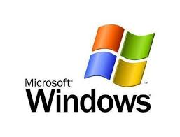

William Henry "Bill" Gates III (lahir di Seattle, Washington, 28 Oktober 1955; umur 64 tahun) adalah seorang tokoh bisnis,
investor, filantropis, penulis asal Amerika Serikat, serta mantan CEO yang saat ini menjabat sebagai ketua Microsoft, perusahaan
perangkat lunak yang ia dirikan bersama Paul Allen. Ia menduduki peringkat tetap di antara orang-orang terkaya di dunia dan
menempati peringkat pertama sejak 1995 hingga 2009, tidak termasuk 2008 ketika ia turun ke peringkat tiga.
Gates termasuk salah seorang pengusaha revolusi komputer pribadi terkenal di dunia. Meski demikian, taktik bisnisnya dikritik
karena dianggap anti-kompetitif. Pada tahap-tahap akhir kariernya, Gates melakukan beberapa usaha filantropi dengan
menyumbangkan sejumlah besar dana ke berbagai organisasi amal dan program penelitian ilmiah melalui Bill & Melinda Gates
Foundation yang didirikan tahun 2000. Bill Gates mengundurkan diri dari jabatannya sebagai pejabat eksekutif tertinggi
di Microsoft pada bulan Januari 2000. Ia masih menjabat sebagai ketua dan membentuk jabatan kepala arsitek perangkat lunak.
Pada Juni 2006, Gates mengumumkan bahwa ia akan bekerja paruh waktu di Microsoft dan purna waktu di Bill & Melinda Gates
Foundation. Ia melimpahkan secara bertahap semua pekerjaannya kepada Ray Ozzie, kepala arsitek perangkat lunak, dan Craig Mundie,
pejabat riset dan strategi tertinggi Microsoft. Hari kerja purna waktu terakhir Gates di Microsoft adalah 27 Juni 2008. Saat ini,
ia masih bekerja di Microsoft sebagai ketua non-eksekutif.
 Microsoft Corporation adalah sebuah perusahaan multinasional Amerika Serikat yang berkantor pusat di Redmond, Washington,
Amerika Serikat yang mengembangkan, membuat, memberi lisensi, dan mendukung berbagai produk dan jasa terkait dengan komputer.
Perusahaan ini didirikan oleh Bill Gates dan Paul Allen pada tanggal 4 April 1975. Microsoft merupakan pembuat perangkat
lunak terbesar di dunia menurut pendapatannya. Microsoft juga merupakan salah satu perusahaan paling bernilai di dunia.
Microsoft Corporation adalah sebuah perusahaan multinasional Amerika Serikat yang berkantor pusat di Redmond, Washington,
Amerika Serikat yang mengembangkan, membuat, memberi lisensi, dan mendukung berbagai produk dan jasa terkait dengan komputer.
Perusahaan ini didirikan oleh Bill Gates dan Paul Allen pada tanggal 4 April 1975. Microsoft merupakan pembuat perangkat
lunak terbesar di dunia menurut pendapatannya. Microsoft juga merupakan salah satu perusahaan paling bernilai di dunia.

Versi pertama Microsoft Windows, yang disebut dengan Windows 1.0, dirilis pada tanggal 20 November 1985. Versi ini memiliki
banyak kekurangan dalam beberapa fungsionalitas, sehingga kurang populer di pasaran. Pada awalnya Windows versi 1.0 ini hendak
dinamakan dengan Interface Manager, akan tetapi Rowland Hanson, kepala bagian pemasaran di Microsoft Corporation, meyakinkan para
petinggi Microsoft bahwa nama "Windows" akan lebih "memikat" konsumen. Windows 1.0 bukanlah sebuah sistem operasi yang lengkap,
tetapi hanya memperluas kemampuan MS-DOS dengan tambahan antarmuka grafis. Selain itu, Windows 1.0 juga memiliki masalah dan
kelemahan yang sama yang dimiliki oleh MS-DOS.